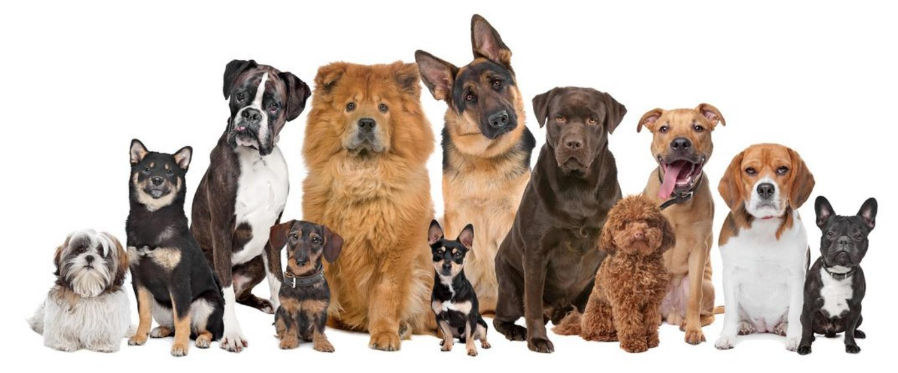

Historia
La fundación Patitas de corazón, fue creada un 17 de Enero de 2005 en el municipio de Florencia Caquetá, por parte de un grupo de jovenes preocupados por el bienestar de los perros y gatos que no contaban con un hogar. Inicialmente se empezo a acoger a las mascotas en las propias casa de los fundadores. En el 2010, con gran esfuerzo y dedicación, ademas de la au¿yuda de contribuyentes voluntarios fue posible hcerse con un establecimiento el cual se adecuo para que funcionara como hogar de paso para mascotas sin hogar y en precarias condiciones. Desde entonces nos hemos enfocado al rescate y cuidado de éstos indefensos seres con la ayuda de distintas personas de buen corazon.